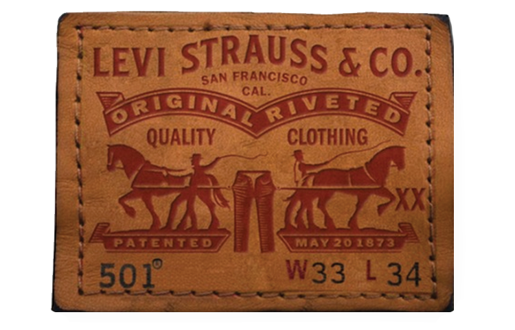
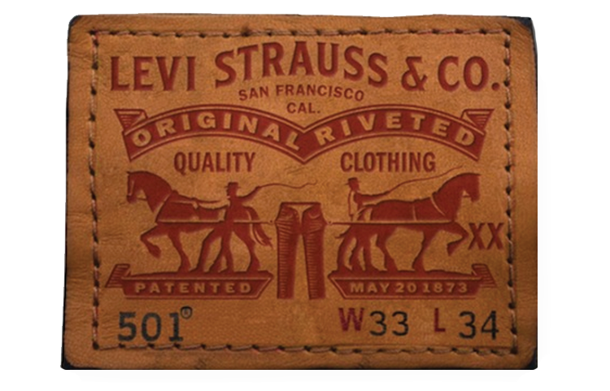

LOGO
MANIA
Moving forward into 2020, “logomania” has returned and shows no sign of stopping. Dapper Dan designed looks that pushed the aesthetic of “logomania” through hip hop fashion in the late 80’s and 90’s, but when minimalism took over in the late 90’s and early 2000s, logos had to be more discreet. In 2018, stylist and designer Gabriela Silvarolli stepped out in a Fendi look, featuring the designer’s double F logo from head to toe. “As recently as a year ago, you didn’t wear logos, you had to be discreet." She said, “Nowadays everything is allowed, nothing is too much.”
Nostalgia has become a trend of sorts. In 2018, the top three most Googled fashion related trends were “1980’s fashion”, “grunge style”, and “1990’s fashion”. Dapper Dan’s reign during the hip-hop era of the 80’s and 90’s has come back mainly through heavily logo monogrammed pieces. He recalls that the essence of power for most of these designer brands is not their aesthetic, or the textiles they use, but their “crest”, or logo. The element of design feels less important. Nowadays, celebrities can be found sprawled across Instagram wearing monochrome outfits studded with repeated logos as the sole focal point of the outfit.


 
